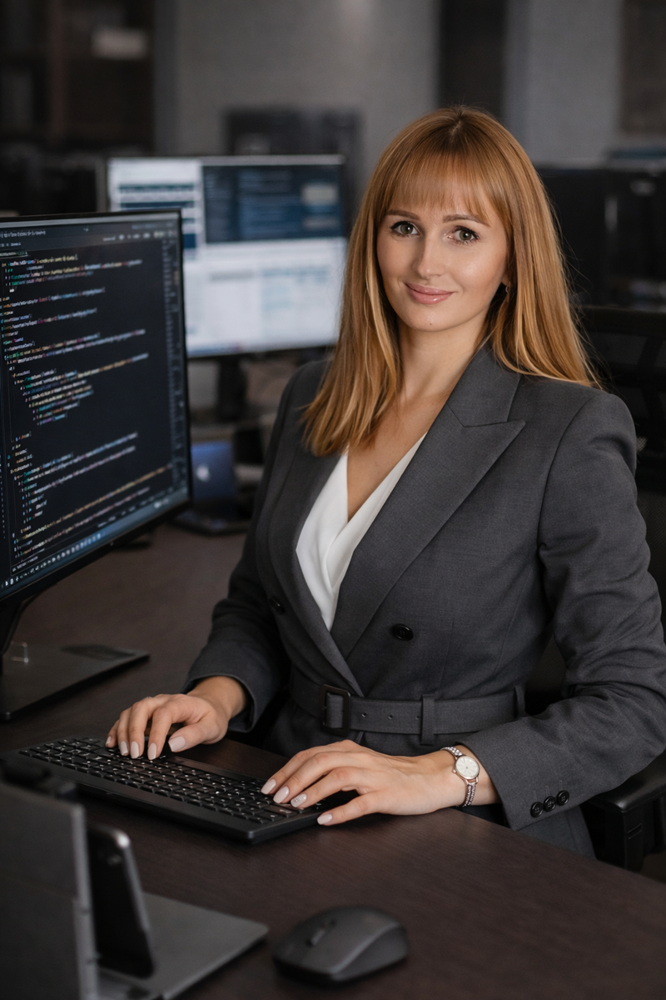

LIA · E-commerce & digital utveckling · Höst 2026
Jag vill förbättra hela resan från produkt till nöjd kund.
Jag studerar parallellt till Webbutvecklare .NET och MLOps Engineer på Nackademin. Mitt huvudprojekt True Sweden är en publicerad e-handelsplattform, och hos Reforma vill jag bidra med webbshop, kundresa, produktflöden, content och teknisk problemlösning.

Tillgänglig för LIA
Kort om mig
Teknik, handel och verksamhetsförståelse
Jag har byggt True Sweden från idé till fungerande e-handelsplattform och arbetat med produktflöden, användarkonton, beställningar, betalningar, administration och AI-baserad virtuell provning.
Min bakgrund inom logistik och eget företagande gör att jag förstår sambandet mellan kundupplevelse, sortiment, leverans och daglig drift. Jag är strukturerad, nyfiken och van att ta initiativ.
Varför Reforma Sthlm?
En direkt koppling till mitt eget e-commerceprojekt
Webbshop & kundresa
Jag kan bidra med ett utvecklarperspektiv på produktsidor, navigering, användarflöden och förbättring av kundupplevelsen online.
Produkter & content
Jag har arbetat med produktdata, administration och tydliga digitala flöden och vill lära mig mer om content, kampanjer, SEO och synlighet.
Logistik & ansvar
Erfarenhet från lagerarbete och eget logistikföretag ger mig praktisk förståelse för flödet bakom e-handeln och för arbete i ett litet team.
Huvudprojekt
True Sweden
En live e-handelsplattform där jag ansvarat för frontend, backend, databas, betalningar, integrationer och deployment.
- Produkt-, konto-, order- och betalningsflöden
- Administrationsfunktioner och strukturerad produktdata
- AI-baserad virtuell provning för kundupplevelsen
customer-journey.ts
const fokus = {
webbshop: tydliga produktflöden
,
kundresa: enkelt & responsivt
,
data: produkter och order
,
leverans: hela flödet
};Utbildning
Teknisk grund och digital bredd
Webbutvecklare .NET · Nackademin
Pågående YH-utbildning: C#, ASP.NET Core, frontend, REST API, databaser, Azure och DevOps.
MLOps Engineer · Nackademin
Pågående parallellt: ML-livscykel, driftsättning, CI/CD, containerisering och övervakning.
RPA · Nackademin
UiPath Studio, Assistant och Orchestrator.
Next.jsReactTypeScriptHTML/CSSPostgreSQLStripeREST APIC#ASP.NET CoreGit/GitHubPower BIExcelUiPath
LIA 30 nov 2026-23 apr 2027
Vill ni utveckla er digitala kundresa tillsammans?
vitaliia.sivakova@yh.nackademin.se · +46 729 43 14 27 · Stockholm · Engelska: grundläggande nivå